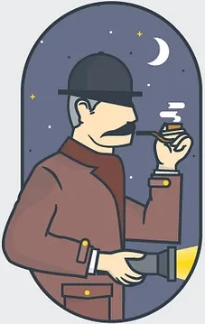

404
Looks like this page is missing. Dont' worry though, our best man is on the case.
Meanwhile, why don't try again by going
BACK HOMELooks like this page is missing. Dont' worry though, our best man is on the case.
Meanwhile, why don't try again by going
BACK HOME